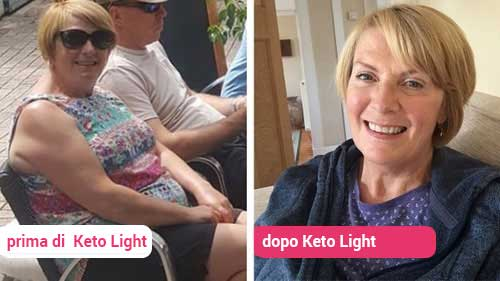
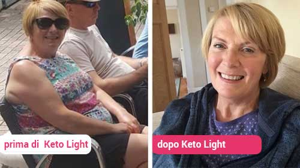

pubblicato oggi alle 7:15
I fan criticano Joaquin Phoenix per aver perso più di 22 kg in 3 mesi per il suo ruolo nel nuovo film"Joker". Joaquin finalmente ha deciso di raccontare tutto e a spiegare.
CNN Mai Joaquin Phoenix non è stato
così magro. L'attore ha perso 22 kg per tre mesi per il ruolo principale nel nuovo film "Joker"
L'attore e produttore 44enne ha perso peso così rapidamente che i fan e i tabloid lo hanno accusato di fame e si sono chiesti se questa malnutrizione fosse giustificata. Anche la troupe cinematografica ha cominciato a preoccuparsi della salute fisica e psicologica di Joaquin, dopo come ha raggiunto così forte trasformazione del corpo in tempi record.
Quando l'attore era stanco della speculazione, è venuto nello show di Jimmy Fallon per dire, come ha potuto perdere 22 kg in 3 mesi, e anche spiegare perché il suo metodo per perdere peso è uno dei più sicuri e innocui per l'organismo.

Nello show di Jimmy Fallon di ieri, Joaquin Phoenix ha dichiarato al pubblico che la dieta cheto lo ha aiutato a perdere 22 kg in 3 mesi. Phoenix ha anche spiegato perché gli esperti di Hollywood consigliano a chiunque voglia perdere peso velocemente di assumere cheto attivatori.
Per i nostri lettori, racconteremo i punti chiave di questa versione.
Jimmy: Benvenuto allo show! E vorrei ringraziarti per aver dedicato del tempo per noi al tuo intenso programma. Sembri davvero più magro!
Joaquin: Grazie! Ad essere sincero, mi sento benissimo. So che nei film sembro molto magro, ma mi sento benissimo come mai prima. E voglio dire subito che non sarei riuscito senza il supporto dei miei fan e parenti.
Jimmy: Stiamo solo morendo di curiosità: hai avuto solo pochi mesi per perdere più di 22 kg per il ruolo del Joker. Per la maggior parte delle persone, ciò richiederebbe anni di dieta rigorosa ed esercizio fisico. Hai qualcosada dire alle persone che ti accusano di avallare e promuovere un disturbo del comportamento alimentare?
Joaquin: Capisco perché alcuni i fan sono stati sconvolti e negativamente risultavano su di esso. Non ho mai avuto l'intenzione di giustificare i disturbi alimentari. Inoltre, voglio ringraziare l'intero equipaggio per preoccuparsi della mia salute. Tuttavia, sono qui per chiarire tutto. Non ho disturbi del comportamento alimentare
Quando ho ottenuto il ruolo, non avevo intenzione di perdere peso. Inoltre ho molto stretto
il grafico. L'ultima cosa che vorrei è morire di fame e fare sport ogni giorno.Ho dovuto capire come perdere
22 kg per 3mesi, senza deviare dal solito ritmo della vita.
Mi ha ispirato l'esperienza di Christian Bale, che è riuscito a perdere 27 kg per il suo ruolo nel film "Il Ferroviere". È riuscito a farlo in modo sicuro e innocuo. Quindi ho chiesto a Christian come ha fatto. Mi ha parlato degli integratori naturali di Cheto..
Jimmy: Cheto? Intendi la chetosi? Abbiamo diversi programmi TV su questo argomento. Tuttavia , raccontaci della tua esperienza. Ho pensato che entrare in uno stato di chetosi richiedesse molto tempo e per questo è necessario cambiare la dieta.
Joaquin: In realtà no, non molto tempo. Solo se per te un paio di mesi - questo non è molto . Avevo bisogno di perdere peso comunque. Perché durante il mio controllo annuale, il mio medico mi ha detto che a causa del mio peso, ho il rischio di contrarre il diabete.
Proprio in quel momento ho capito che mi
bisogno di buttare fuori un po ' di peso. Ho chiesto ai miei amici di diete ed esercizi. Ci ho provato, ma ho smesso quasi immediatamente. Non hanno funzionato perché trascorro molto tempo con Rooney Mara e costantemente impegnato
per i nuovi progetti. A differenza di altri attori, non ho alcune ore libere al giorno per gli allenamenti.
Quindi ho parlato con Christian Bale e lui mi ha consigliato un nuovo strumento per dimagrire. Ha detto che dovrebbe essere preso più volte al giorno e basta! In realtà, questo strumento "inganna" il nostro corpo e lo fa bruciare i grassi, invece dei carboidrati necessari per produrre energia. A causa di ciò, si perde grasso in eccesso, ma allo stesso tempo si mantengono le proteine, - la massa muscolare.
Anche se è una polvere solubile in acqua, attiva la capacità innata del corpo di bruciare i grassi e accelera la perdita di peso. La cosa bella è che io non ho sentito fame e ho passato l'ossessione per il cibo, quindi sono riuscito a perdere peso velocemente per il ruolo di Joker.
Jimmy:: Inganna il corpo? Sembra incredibile. E'naturale? Qual è il trucco?
Joaquin: Sì, ne sono sicuro al 100%. In generale, la chetosi è un processo naturale per il nostro corpo. Ma si attiva solo quando smetti di consumare carboidrati per 2 settimane. Ciò ti consente di iniziare a bruciare i grassi istantaneamente invece dei carboidrati. E non c'è nessun problema.
Non è necessario contare le calorie. Si può anche mangiare cibi "domestici" dannosi, sui quali i medici pagati dicono in TV che è dannoso. E la cosa migliore è che la chetosi ti aiuta a sentirti meglio bruciando i grassi lasciando comunque le proteine mentre perdi peso.
Una volta raggiunto il peso desiderato, puoi semplicemente smettere di prendere la polvere, bere molta acqua entro 2 giorni e basta! A causa del fatto che per il ruolo avevo bisogno di sembrare molto magro, continuavo a prendere la bevanda per alcune settimane in più. So che ho sembravo esausto e molto magro, ma mi sentivo benissimo.
Jimmy: Prima dell'inizio dello spettacolo, ho studiato questo problema e ciò che dici è confermato da molte star e atleti. A chi altro hai parlato di questo? È adatto a uomini e donne?
Joaquin: Ho parlato a molte persone di questo strumento e l'ho consigliato a molte celebrità come Jay Law, Melissa McCarthy, LeBron James.
Mi dissero tutti che i supplementi di cheto li aiutavano, senza lamentele. Sai, ho perso così tanto peso che la mia famiglia ha iniziato a chiedere "Quando smetterai finalmente di perdere peso?" Ma onestamente, mi sono sentito benissimo.

Jimmy: È ... semplicemente incredibile! Ci dirai il nome di questo rimedio cheto?
Joaquin: Sì, lo strumento si chiama . L'ho comprato durante la vendita stagionale, lo fanno una volta all'anno. Puoi anche approfittare dell'offerta speciale.
Ho pagato un prezzo molto basso per porzione e questo prodotto mi è stato sufficiente per molto tempo. E tutto questo mi è venuto quasi una miseria.
Jimmy: Dunque. è la tua soluzione migliore. Questo strumento ti aiuterà a ottenere il corpo dei tuoi sogni senza digiuno e allenamenti estenuanti. Dopo il completamento il programma, invieremo ai nostri spe
Che cos'è Cheto?
Il cheto, noto anche come chetosi, è un processo in cui il tuo corpo naturalmente i bruciagrassi anziché le proteine. Quando il corpo si concentra sulla combustione dei grassi anziché sulle proteine, si sente un impulso di energia sano, poiché l'energia ricevuta dai grassi è molto più nutriente.
Secondo gli studi, la maggior parte delle persone con più di 20 anni si trova in uno stato di chetosi e brucia i grassi in modo naturale. Questo perché il corpo è in modalità "trova un partner" e fa di tutto per mantenersi in forma. Con l'età e con l'avvento dei bambini, il corpo passa alla modalità "riproduzione". Cerca di risparmiare energia, a seguito della quale il metabolismo rallenta. La buona notizia è che ti aiuterà a passare alla combustione dei grassi 24 ore su 24.
Ma la cosa più importante è che puoi mangiare quello che vuoi e non pensare a calorie, grassi e carboidrati. Il corpo brucia grassi e carboidrati per produrre energia, lasciando solo le proteine - la massa muscolare. Questo strumento è ideale per le donne che hanno avuto molti tentativi di perdere peso e iniziare a praticare sport, ma tutto è finito con delusione e aumento di peso.

Joaquin Phoenix non è l'unica celebrità che usa questo miracolo brucia grassi. Drew Barrymore, Kim Kardashian e Joanna Gaines - tutti hanno perso molto peso grazie alla stessa dieta. Ora non è senza ragione il rimedio più ambito.
Grazie alla formula clinicamente testata, in 7 giorni puoi perdere 4 kg e purificare il tuo corpo dalle tossine. Immaginate che si perde peso ogni 7 giorni per le prime 5 settimane. E la cosa più piacevole quello che ora funziona offerta speciale!
Ma sappiamo cosa stai pensando ora, e sì, anche noi abbiamo avuto dubbi.
Poi su tutti i social network è apparso l'hashtag #Keto.
Uomini e donne in tutto il paese affermano, che li ha aiutato a sembrare e sentirsi più giovane di 10-20 anni, senza nemmeno sforzarsi. Questa era la ragione per capire di cosa si trattasse. Essendo amici più cari con Paulina Silver, Joaquin Phoenix accettò volentieri di parlarcene.
Siamo andati al sito Web ufficiale di e abbiamo visto che ora, naturalmente per un periodo di tempo limitato, hanno un'oer un periodo di tempo limitato, hanno un'offerta speciale: un enorme sconto su ogni confezione, così abbiamo deciso di approfittarne immediatamente!
Da quando abbiamo lavorato per la prima volta con questo prodotto, siamo rimasti molto incuriositi. Dopo aver concordato tutte le questioni con il nostro team legale, il nostro caporedattore ha insistito su un caso di studio. La nostra giornalista Paulina Silver ha accettato volentieri di diventare la nostra cavia.
È stata incaricata di seguire questa dieta di celebrità e registrare tutto ciò che le accade nei prossimi 30 giorni.
 

Prima che Paulina si mettesse al lavoro, dovevamo assicurarci che fosse un prodotto naturale. Il nostro esperto ci ha detto che è costituito da analoghi chetonici a base vegetale. Dopo diversi giorni di controllo, abbiamo scoperto che danno le valutazioni e le recensioni più alte a .
Siamo rimasti colpiti da oltre 4.000 recensioni positive con una valutazione media di 4,9. Abbiamo ordinato e in un paio di giorni abbiamo ricevuto il pacchetto!
Il segreto di sta nel fatto che aiuta ad eliminare i carboidrati dalla dieta mantenendo le proteine. Inoltre, allevia il corpo dal grasso accumulato e pulisce il sistema digestivo.
È stato clinicamente dimostrato che :
-
Aiuta a entrare in uno stato di chetosi
-
Brucia i grassi nelle zone problematiche
-
Aumenta il livello di chetoni nel corpo
-
Brucia i grassi e pulisce il sistema digestivo
-
Aumenta i livelli di energia per prevenire un attacco di fame serale
Per il nostro caso di studio, abbiamo ordinato il prodotto e abbiamo approfittato di un'offerta speciale: uno sconto enorme su ogni confezione. Questa offerta è valida per un altro mese per i nostri lettori. (clicca qui sotto per un link esclusivo)
Dopo 3 giorni, abbiamo ricevuto il nostro .
Di seguito sono riportati i miei risultati ... In poche parole, sono fantastici!
Il percorso di Paulina per perdere peso

Settimana 1
Questo è il 7 ° giorno di assunzione di . Quando ho iniziato, pesavo 73 kg. Ho deciso di partecipare volontariamente a questo esperimento, perché nel corso degli anni i chili in più sono in qualche modo aumentati impercettibilmente per me. Ho provato varie diete fantasiose e programmi di fitness online, ma tutti senza successo. Ma quando ho visto che mio marito stava guardando un'altra donna con lo sguardo che una volta mi aveva guardato, mi sono reso conto che era ora di cambiare.
Non sapevo da dove cominciare. Ero stufo di queste vuote promesse di medici televisivi e e dei cosiddetti influenzatori del settore. Così ho deciso di ascoltare Joaquin e ho dato possibilità a .
E ora, dopo 7 giorni, peso 69 kg. Ho perso 4 kg, ma in pratica era sparita solo l'acqua. Mi sento davvero più energica. Fondamentalmente, al lavoro, comincio a a tendere nel sonno alle 15:00. Ma ora non c'è più. Pertanto, anche se questo esperimento non funziona, continuerò a purificare il mio corpo.
Settimana 2
Già il 14 ° giorno, ora peso 65 kg. Ho perso 8 kg. Ho lasciato cadere 8 kg per 14 giorni, ma, oh, di solito i primi 8 Kg è solo acqua. Mi sento più rilassata e non mi rigiro più e non mi giro nel letto di notte. Mi sento più energica anche al mattino.
o notato un altro vantaggio: ora mi piacciono meno i dolci e gli sbalzi d'umore costanti si sono fermati. Mi sento di nuovo più sexy, ma non come prima. C'è ancora molto da lavorare.
Settimana 3
Oggi è il 18 ° giorno della mia dieta cheto. Prima di salire sulla bilancia, ho notato che i miei pantaloni erano molto più larghi. Sulla bilancia ho visto il numero 61. L'ultima volta che ho pesato 61 kg quando mi sono sposata. Amici e colleghi mi stanno già facendo complimenti!
Ho persino potuto indossare i miei jeans skinny, che da tempo erano rimasti nell'armadio.
Settimana 4
Oggi è il 28 ° giorno e peso 58 kg. Questa settimana ho finalmente smesso di mangiare dolci. Ho 4 giorni di anticipo. Tutte le mie aree problematiche, vale a dire il grasso sulla schiena, l'addome e le cosce hanno iniziato a scomparire!
E mio marito ha ricominciato a flirtare con me. Ieri sera siamo andati a fare una passeggiata, e per la prima volta in molti anni, ho notato che fastidioso quando gli altri uomini mi guardano! L'ultima volta è stato quando ci siamo appena sposati!
Settimana 5
Oggi è il 32 ° giorno. Peso 57 kg, in 31 giorni ho perso 16 kg. Non riesco a trovare le parole per descrivere come mi sento. È diventato molto più facile comprare vestiti. Ora non rimango per anni nei negozi per trovare qualcosa di utile. Non chiedo più: "C'è una taglia più grande?"
Quando sono venuta dal mio dottore, mi ha guardato così sorpreso e ha anche flirtato un po '. Il mio esame del sangue ha mostrato che il mio cuore è ora completamente sano e non c'è più alcun rischio di diabete!
E, naturalmente, mi ha salvato il matrimonio. Ora sto brillando di felicità. Mio marito (che non mi sta lasciando ora), mi ha trattenuto a letto un'ora più a lungo questa mattina. E ' incredibile. E ' una bella sensazione quando il tuo uomo ti prende tra le braccia come una lanugine.
I miei parenti e conoscenti con cui non ho parlato da molto tempo, ora mi scrivono su Facebook, dicono che sono bellissima e mi chiedono come l'ho fatto. Mi sento davvero bene.
In conclusione, possiamo dire che all'inizio, qui su CNN eravamo un po ' dubbiosi, ma devi provare tu stesso per assicurarti che i risultati siano reali. Dopo la nostra ricerca, siamo lieti di vedere che la gente realmente ottengono risultati positivi, tra cui io.
Non hai assolutamente nulla da perdere. Per usufruire l'offerta speciale, segui sul link; nessun impegno!
Con puoi ottenere il tuo peso desiderato e goderti il processo!


 Plugin di commento di Facebook
Plugin di commento di Facebook